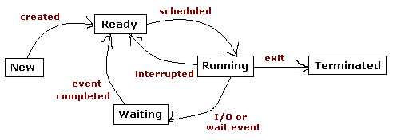
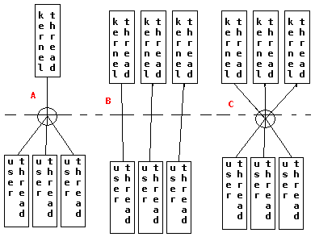

| Process's
States  |
Process
Control Block PCB - is the structure that represents a process in the system and all its associated resources: (o)- process state (o)- process ID (o)- program counter (o)- CPU registers (o)- parent ID (o)- children IDs (o)- scheduling information (o)- memory management information (o)- accounting information (o)- I/O status |
| Process
Scheduling The system's scheduler is the element in an OS that takes a process from the ready queue and allows it to execute for a while on the CPU. The act of moving a process from state to state is called shceduling. |
|  |
Single
Threaded kernels (A) Called many-to-one kernel threading model. Many user threads compete for a single kernel thread of kernel control. The result is lots of waiting in the user threads. In this model user threads still get some benefit, but when interacting with the kernel there is no benefit. To not oeverflow the system with requests from threads, some systems of this kernel threading model(ex: Windows NT) put a max limit on the user threads that can run at the same time. In this model a single thread can block the app if there are many threads wanting the kernel control. Multithreded Kernel (B) Called one-to-one kernel threading model. The kernel spawns a new thread for each user-thread that makes kernel requests. This increases concurency and eliminates the block of threads. The overhead of creating kernel threads can affect the application performance. For this reason systems with this model(ex: Win2000) put a max limit on the number of running threads with kernel requests. Multithreaded Kernel (C) Called many-to-many kernel threading model. This model is working out the problem of overhead in (B) - where the bottle neck is when it is needed to create/destroy kernel treads for each new user-thread with kernel requests. Instead it creates it and keeps it runing, till somebody else will need to do the requests and an existing one will be used. This model is more favorable for multi CPU systems. Many UNIXes support this model. |